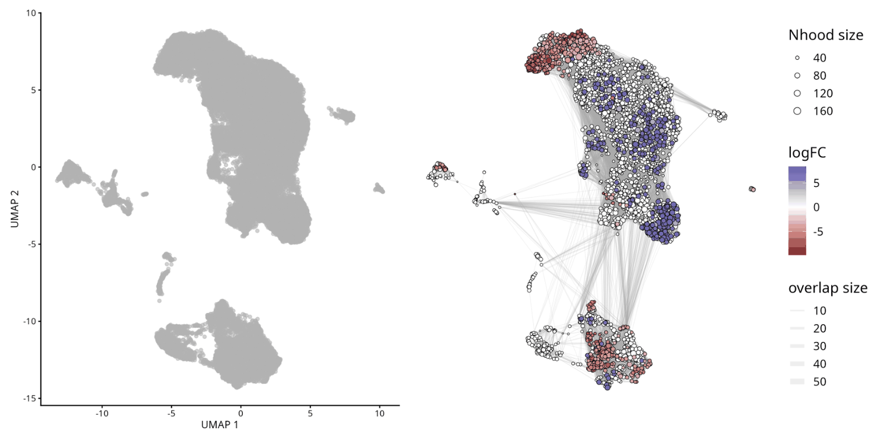
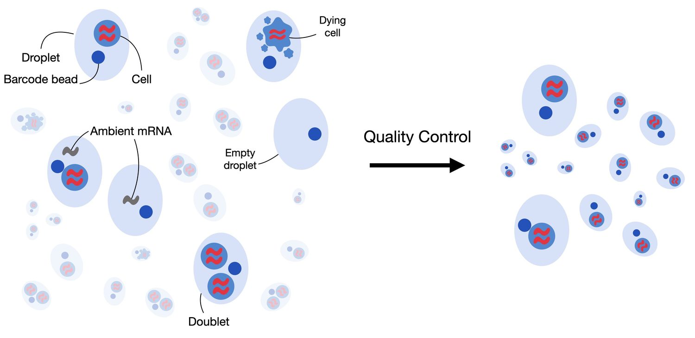

Controle de Qualidade, Redução de Dimensionalidade e Expressão Diferencial
Nesta seção, utilizaremos o pacote Seurat para processar e analisar dados de scRNA-seq, cobrindo etapas essenciais como importação de dados, filtragem e visualização preliminar para garantir o controle de qualidade adequado antes das análises subsequentes.
Uma parte fundamental da análise de scRNA-seq é a identificação de genes e transcritos com padrões de expressão distintos em diferentes condições. Essas diferenças podem revelar processos biológicos subjacentes que impulsionam a heterogeneidade celular. Para refinar o conjunto de dados, avaliaremos sua qualidade utilizando métricas-chave, aplicaremos técnicas de normalização para mitigar variabilidade técnica e implementaremos métodos de clustering para agrupar células com base nos padrões de expressão gênica.
Além disso, realizaremos análises de expressão diferencial, anotação de tipos celulares e técnicas de enriquecimento funcional para investigar mecanismos de regulação gênica, identificar marcadores importantes e explorar vias envolvidas na diferenciação celular e em estados de doença. Em conjunto, essas abordagens fornecem uma estrutura abrangente para interpretar dados de transcriptômica de célula única e extrair insights biológicos significativos.
Configurar
Nesta seção, configuraremos o ambiente de computação necessário para executar as análises para esta parte. A configuração envolve usar Shell e R dentro deste notebook.
Primeiro, criaremos uma função chamada shell_call para executar scripts de shell diretamente.
Depois disso, instalaremos e configuraremos o R para garantir que ele esteja pronto para uso.
R é uma linguagem de programação e ambiente de software para análise de dados, estatísticas e gráficos. É amplamente utilizado em pesquisa científica, aprendizado de máquina, bioinformática e ciência de dados devido à sua flexibilidade e vasta coleção de pacotes. R é de código aberto e oferece ferramentas para manipulação de dados, modelagem estatística, visualização e integração com outras linguagens, como Python e C++.
# Tutorial Original: https://stackoverflow.com/questions/70025153/how-to-access-the-shell-in-google-colab-when-running-the-r-kernel
shell_call <- function(command, ...) {
result <- system(command, intern = TRUE, ...)
cat(paste0(result, collapse = "\n"))
}
loadPackages = function(pkgs){
myrequire = function(...){
suppressWarnings(suppressMessages(suppressPackageStartupMessages(require(...))))
}
ok = sapply(pkgs, require, character.only=TRUE, quietly=TRUE)
if (!all(ok)){
message("There are missing packages: ", paste(pkgs[!ok], collapse=", "))
}
}
# COnfigurar R2U para Ubuntu Jammy
download.file("https://github.com/eddelbuettel/r2u/raw/master/inst/scripts/add_cranapt_jammy.sh",
"add_cranapt_jammy.sh")
Sys.chmod("add_cranapt_jammy.sh", "0755")
shell_call("./add_cranapt_jammy.sh")
bspm::enable()
options(bspm.version.check=FALSE)
shell_call("rm add_cranapt_jammy.sh")
# Instalar pacotes necessários
cranPkgs2Install = c("BiocManager", "ggpubr", "Seurat", "cowplot",
"Rtsne", "hdf5r", "clustree", "SoupX")
install.packages(cranPkgs2Install, ask=FALSE, update=TRUE, quietly=TRUE)
biocPkgs2Install = c("clusterProfiler", "preprocessCore", "rols",
"scDblFinder","clusterExperiment", "SingleR",
"celldex", "org.Hs.eg.db", "DropletUtils",
"miloR", "scran", "scater")
BiocManager::install(biocPkgs2Install, ask=FALSE, update=TRUE, quietly=TRUE)
Pacotes no R
Um pacote em R é uma coleção de funções, dados e documentação agrupados. Pacotes ajudam a estender a funcionalidade principal do R ao fornecer ferramentas específicas para diferentes tarefas, como análise de dados, visualização de gráficos, estatísticas avançadas, etc.
Instalação
Antes de usar um pacote, ele deve ser instalado no seu ambiente. Isso é feito apenas uma vez (a menos que precise ser atualizado) com o comando:
install.packages("nome_do_pacote")
Biblioteca
Uma vez instalado, o pacote precisa ser carregado em cada sessão em que você deseja usá-lo. O comando verifica se o pacote mencionado está instalado. Se o pacote estiver instalado, ele estará carregado e pronto para uso. Se o pacote não estiver instalado, o R retornará um erro.
É aqui que entra a função library():
library(nome_do_pacote)
# Para simplificar o carregamento de pacotes, criamos a função loadPackages().
# Mas, se você não tiver a função, você deve usar 'library(nome_do_pacote)'
pkgs = c("Rtsne", "Seurat", "tidyverse", "cowplot",
"scDblFinder", "clustree", "preprocessCore",
"clusterProfiler", "celldex", "SoupX",
"DropletUtils", "miloR", "scran", "scater")
loadPackages(pkgs)
Em seguida, carregue as bibliotecas que você instalou anteriormente.
- Rtsne: pacote em R que implementa a técnica t-SNE para redução de dimensionalidade e visualização de dados.
- Seurat: Seurat é um pacote R projetado para controle de qualidade, análise e exploração de dados de RNA-seq de célula única.
- scDblFinder: O pacote scDblFinder reúne vários métodos para a detecção e manipulação de dupletos/múltiplos em dados de sequenciamento de células únicas (ou seja, várias células capturadas dentro da mesma gota ou volume de reação)
- Cowplot Fornece vários recursos que ajudam a criar figuras com qualidade de publicação com ggplot2, como um conjunto de temas, funções para alinhar gráficos e organizá-los em figuras compostas complexas e funções que facilitam a anotação de gráficos e/ou a mistura de gráficos com imagens.
- ClustreeEsta visualização mostra as relações entre clusters em múltiplas resoluções, permitindo que os pesquisadores vejam como as amostras se movem conforme o número de clusters aumenta.
- PreprocessCore: Uma coleção de funções de pré-processamento
Entrada de dados, matriz de contagem UMI esparsa
Referência: https://www.nature.com/articles/s41591-020-0901-9

Download dados brutos do GEO
# Este comando em R baixa um arquivo da internet e o salva localmente
download.file('https://www.ncbi.nlm.nih.gov/geo/download/?acc=GSE145926&format=file','GSE145926_RAW.tar')
# Este comando usa a função personalizada shell_call para executar um comando shell.
# O comando tar -xf é usado para extrair o conteúdo de um arquivo compactado no formato .tar.
shell_call("tar -xf GSE145926_RAW.tar")
# rm é um comando shell para excluir arquivos, liberar espaço e manter o diretório organizado.
shell_call("rm GSE145926_RAW.tar")
# ls é usado para listar arquivos.
# -l: Exibe detalhes do arquivo (permissões, proprietário, tamanho, data, etc.).
# -h: Formata tamanhos de arquivo em um formato legível por humanos, como KB, MB ou GB.
shell_call("ls -lh")
Separe os arquivos scRNA e TCRseq.
# Crie um diretório
shell_call("mkdir -p TCRseq")
# mv é o comando shell para mover ou renomear arquivos.
# O padrão *_filtered_contig_annotations.csv.gz usa o caractere curinga *
# para encontrar todos os arquivos que terminam com _filtered_contig_annotations.csv.gz.
shell_call("mv *_filtered_contig_annotations.csv.gz TCRseq/")
shell_call("mkdir -p scRNAseq")
# Este comando move todos os arquivos que têm _filtered_ em seus nomes para o diretório scRNAseq/.
shell_call("mv *_filtered_* scRNAseq/")
shell_call("ls -lh")
Agora vamos ler dados para uma amostra. Os dados do 10X Genomics são geralmente armazenados no formato HDF5 (Hierarchical Data Format versão 5), um formato de arquivo projetado para armazenar e organizar grandes volumes de dados de forma eficiente, que é um formato científico de alto desempenho. O comando Read10X_h5() é capaz de importar esses dados e carregá-los no R, usando um tipo especial de matriz, que tem uma maneira eficiente de representar dados com muitos zeros.
The Read10X_h5() command is able to import this data and load it into R, using a special type of matrix, which has an efficient way of representing data with lots of zeroes.
Como esses arquivos foram criados?
#Read10X_h5 lê os arquivos da 10x em h5
# '<-' direciona para onde armazenar o valor
# sc armazena o arquivo
sc <- Read10X_h5("scRNAseq/GSM4339769_C141_filtered_feature_bc_matrix.h5")
# Tem algo de especial nessa matriz?
sc[33493:33500,1:3]
Em dados de sequenciamento de RNA de célula única (scRNA-seq), a maioria dos valores na matriz são zeros (0), representando genes sem moléculas detectadas em muitas células. Para lidar com isso de forma eficiente, Seurat usa uma representação de matriz esparsa sempre que possível.
Matrizes esparsas armazenam apenas os valores diferentes de zero e suas localizações, reduzindo significativamente o uso de memória e melhorando a velocidade de processamento para conjuntos de dados como Drop-seq, inDrop ou dados 10x Genomics.
Por exemplo, converter uma matriz densa (~1600 MB) em uma matriz esparsa reduz seu tamanho para menos de 160 MB — uma redução de 10 vezes. Essa otimização é crucial ao trabalhar com conjuntos de dados scRNA-seq em larga escala.
# Converte o objeto sc, uma matriz esparsa de um conjunto de dados scRNA-seq, em uma matriz densa
dense.size <- object.size(as.matrix(sc))
# Calcula o tamanho do objeto sc sem convertê-lo em uma matriz densa.
sparse.size <- object.size(sc)
# Retorna o tamanho da matriz densa e da matriz esparsa em MB.
format(dense.size, "MB")
format(sparse.size, "MB")
# Calcula a proporção do tamanho da matriz densa para o tamanho da matriz esparsa.
density.size/sparse.size
Usamos os comandos usuais de matriz para manipular uma matriz esparsa. Veja abaixo como:
Conhecer as dimensões da matriz; Identificar a classe de uma matriz esparsa; Selecionar linhas e colunas de uma matriz esparsa usando índices numéricos; Extrair os nomes das colunas (ou das linhas); Selecionar linhas (ou colunas) de uma matriz esparsa usando os nomes das linhas (ou colunas)
# Quantas características?
# Quantas células?
dim(sc)
# Qual é a classe: matriz esparsa
class(sc)
# Selecione algumas linhas e algumas colunas
# Há algo especial sobre esta matriz?
sc[33495:33500,1:3]
# Selecione usando rownames (colnames)
sc[c("MIR1302-2HG","FAM138A","OR4F5"), 1:30]
# Quais são os nomes dos genes
rownames(sc)[1:3]
# Extraia os nomes das células
colnames(sc)[1:3]
Qual é o tamanho desta tabela de contagem?
# Mostrar as dimensões de sc
print(dim(sc))
# Mostrar a classe de sc
print(class(sc))
Controle de Qualidade
-
Agora criaremos um objeto Seurat para continuar com a análise. Nesta etapa, aplicaremos alguns filtros:
- Remover genes que são detectados em menos de 3 células.
- Remover células que expressam menos de 200 genes.
Essas etapas de filtragem ajudam a limpar os dados excluindo genes e células com expressão mínima, o que pode não ser informativo. No entanto, esses filtros são opcionais — você pode ajustar os limites ou pular esta etapa completamente, se preferir.
sampleA <- CreateSeuratObject(counts = sc, project="sampleA", min.cells=3, min.features=200)
# Méticas de QC para as primeiras 5 células
head(sampleA@meta.data, 5)
O que sabemos sobre o objeto sampleA?
Quantos genes e quantas células o objeto Seurat tem?
Além disso, por que esses números são diferentes?
Lembre-se de que criamos o objeto Seurat especificando que cada gene tinha que estar presente em, pelo menos, 3 células (caso contrário, o gene é removido). Também especificamos que cada célula precisa ter, pelo menos, 200 genes.
sampleA
## Vamos verificar as dimensões da matriz original (sc)
## e comparar com o objeto Seurat (sampleA)
dim(sc)
dim(sampleA)
dim(sc) - dim(sampleA)
Qual é o tamanho do nosso objeto Seurat e quantos genes e células foram removidos da tabela original?
Identificando Doublets
Doublets ocorrem quando duas ou mais células são capturadas por engano juntas no mesmo poço, o que é um problema comum no sequenciamento de RNA de célula única. Isso pode acontecer quando a suspensão de células está muito concentrada.
Para resolver esse problema, usaremos o método scDblFinder para identificar e remover doublets do nosso conjunto de dados. Este método requer um objeto da classe SingleCellExperiment, que faz parte da infraestrutura do Bioconductor.
-
Etapas:
- Prepare the Prepare o objeto SingleCellExperiment: isso é necessário antes de aplicar o método scDblFinder.
- Aplique scDblFinder: o método usa uma abordagem probabilística para detectar doublets, portanto os resultados podem variar ligeiramente entre as execuções.
- Garanta a reprodutibilidade: para evitar variabilidade nos resultados, definiremos uma semente aleatória usando a função set.seed(). Isso garante que o método produza os mesmos resultados sempre que for executado.
Ao definir a semente, tornamos o processo reproduzível, ajudando a confirmar que os resultados são consistentes em diferentes execuções.
sce <- as.SingleCellExperiment(sampleA)
sce
# Precisamos definir.seed() porque o comando scDblFinder usa uma estratégia probabilística para identificar doublets.
# Isso significa que, toda vez que executarmos o comando, ele produzirá resultados ligeiramente diferentes.
# O comando set.seed() garantirá os mesmos resultados todas as vezes.
set.seed(123)
results <- scDblFinder(sce, returnType = 'table') %>%
as.data.frame() %>%
filter(type == 'real')
head(results)
Observe que a tabela de resultados inclui uma coluna chamada class, que categoriza as células em dois tipos: singlet e doublet. Conforme mostrado abaixo, as células doublet são aquelas que devem ser removidas do conjunto de dados antes de prosseguir com análises posteriores. Em outras palavras, queremos manter apenas as células sinalizadas como singlet, que representam células individuais, e remover os doublets.
results %>%
dplyr::count(class)
Salve os resultados de scDblFinder() para reutilizar mais tarde
# Esta função é usada para criar um caminho de arquivo de forma robusta e independente do sistema operacional (funciona no Windows, Linux, etc.)
outfile = file.path('dataset1_control.txt')
# Esta função grava os dados de um data frame ou matriz em um arquivo de texto.
write.table(results, outfile, sep='\t', quote=F,
col.names=TRUE, row.names=TRUE)
Vamos encontrar os doublets e removê-los da nossa matriz, ou seja, vamos manter apenas os singlets.
Lembre-se de que, nesta sessão, estamos focando no objeto Seurat (sampleA), e é por isso que trabalharemos com subconjunto deste objeto.
keep = results %>%
dplyr::filter(class == "singlet") %>%
rownames()
sampleA = sampleA[, keep]
sampleA
A porcentagem de leituras mitocondriais não é calculada automaticamente pelo Cell Ranger. Então, primeiro temos que fazer isso. Usamos essa oportunidade para incluir a porcentagem de leituras MT como metadados para o objeto Seurat (sampleA). Lembre-se de que uma alta porcentagem de leituras mitocondriais é geralmente associada a células de alto estresse e baixa qualidade. Veja qual o formato está anotado as leituras mitocondriais da sua referência
sampleA[["percent.mt"]] <- PercentageFeatureSet(sampleA, pattern="^MT-")
Esta função permite calcular facilmente a porcentagem de contagens que pertencem a um subconjunto específico de características para cada célula. Por exemplo, você pode usá-la para calcular a porcentagem de transcrições que mapeiam para genes mitocondriais. O cálculo é feito somando as contagens (UMIs) para as características no subconjunto (por exemplo, genes mitocondriais) e dividindo essa soma pela soma total de contagens para todas as características (todos os genes) em cada célula. O resultado é então multiplicado por 100 para obter a porcentagem.
Neste exemplo, a função adiciona uma nova coluna chamada percent.mt aos metadados associados à amostra (aqui, sampleA). Esta coluna contém a porcentagem calculada para cada célula.
Esclarecimento de terminologia:
Features (Característica): Refere-se a genes neste contexto.
Contagem: Refere-se às contagens de UMI (Identificadores Moleculares Únicos) para cada gene.
sampleA@meta.data %>% head()
O código fornecido é usado para gerar um gráfico de violino para visualizar a distribuição de certos recursos no conjunto de dados usando o pacote Seurat em R.
# Esta função é usada para criar gráficos de violino, que exibem a distribuição de valores para um determinado recurso em células em um conjunto de dados.
scPlot <- VlnPlot(sampleA, features = c("nFeature_RNA", "nCount_RNA", "percent.mt"), ncol=3)
scPlot
#ggsave("01-VlnPlot.png",plot = scPlot, bg = 'white')
Gráficos de violino unidimensionais são frequentemente difíceis de interpretar a distribuição inteira, então vamos tentar alguns histogramas. Esta é também uma demonstração de como fazer gráficos sem usar os comandos de visualização de Seurat.
sampleA.qc <- FetchData(sampleA,
vars=c("nFeature_RNA","nCount_RNA","percent.mt"))
scPlot <- sampleA.qc %>%
ggplot() +
geom_histogram(aes(x=nCount_RNA), bins=100)
scPlot
#ggsave("2-histogram.png",plot = scPlot, bg = 'white')
Tente extrair a média de nCounts_RNA
summary(sampleA.qc$nCount_RNA)
Vemos muito claramente que a célula típica tem cerca de 20.000 UMIs, mas isso varia de apenas algumas dezenas a mais de 60.000
Vamos ampliar a extremidade de contagem baixa do espectro apenas para ver se podemos identificar alguma estrutura (por exemplo, bimodalidade)
scPlot <- sampleA.qc %>%
ggplot() +
geom_histogram(aes(x=nCount_RNA), bins=100) +
xlim(0,1500)
scPlot
#ggsave("03-histogram.png",plot = scPlot, bg = 'white')
Dada a grande faixa dinâmica, talvez uma escala logarítmica seja útil
scPlot <- sampleA.qc %>%
ggplot() +
geom_histogram(aes(x=nCount_RNA), bins=200) +
scale_x_log10()
scPlot
#ggsave("04-histogram.png",plot = scPlot, bg = 'white')
Agora vamos olhar para o número médio de genes por célula
median(sampleA.qc$nFeature_RNA)
scPlot <- sampleA.qc %>%
ggplot() +
geom_histogram(aes(x=nFeature_RNA), bins=200) +
geom_vline(xintercept = 3096,color="red")
scPlot
#ggsave("05-histogram.png",plot = scPlot, bg = 'white')
scPlot <- sampleA.qc %>%
ggplot() +
geom_histogram(aes(x=nFeature_RNA), bins=200) +
geom_vline(xintercept = 10^(3.491),color="red") +
scale_x_log10()
scPlot
#ggsave("06-histogram.png",plot = scPlot, bg = 'white')
summary(sampleA.qc$nFeature_RNA)
Parece que a célula típica tem dados sobre cerca de 3000 genes, variando de 200 (o mínimo que definimos quando criamos o objeto Seurat) a mais de 9000
E quanto à porcentagem de leituras mitocondriais?
scPlot <- sampleA.qc %>%
ggplot() +
geom_histogram(aes(x=percent.mt), bins=100) +
geom_vline(xintercept = 10,color="red")
scPlot
#ggsave("07-histogram.png",plot = scPlot, bg = 'white')
summary(sampleA.qc$percent.mt)s
A maioria das células está abaixo de 5%, mas algumas estão acima de 50%
Frequentemente é mais útil olhar para várias métricas de QC juntas em vez de individualmente. Vamos tentar alguns gráficos de dispersão 2D simples
scPlot <- FeatureScatter(sampleA, feature1="nCount_RNA", feature2="percent.mt")
scPlot
#ggsave("08-FeatureScatter.png",plot = scPlot, bg = 'white')
scPlot <- FeatureScatter(sampleA, feature1="nCount_RNA", feature2="nFeature_RNA")
scPlot
#ggsave("09-FeatureScatter.png",plot = scPlot, bg = 'white')
Lembre-se: não precisamos usar apenas ferramentas de plotagem Seurat.
ggplot2 é uma ferramenta de visualização poderosa, que lida bem com tabelas para criar gráficos. Verifique o gráfico acima (nFeature vs. nCount) e considere que pode ser interessante entender como os dados se comportam em função da porcentagem de leituras de MT.
scPlot <- sampleA.qc %>%
ggplot() +
geom_point(aes(nCount_RNA, nFeature_RNA, colour=percent.mt), alpha=.50) +
scale_x_log10() +
scale_y_log10()
scPlot
#ggsave("10-FeatureScatter.png",plot = scPlot, bg = 'white')
A maior parte deste QC parece bem legal. Não vemos subpopulações de células notavelmente diferentes por essas métricas de QC. Só por segurança, vamos remover células com mais de 10% de leituras mitocondriais, o que pode ser um sinal de dano ex-vivo durante o manuseio da amostra e geração da biblioteca
#Filter using more than one variable
sampleA <- subset(sampleA, nCount_RNA > 500 & nFeature_RNA < 7000 & percent.mt < 10)
Vamos reutilizar o gráfico que criamos no último exercício e criar uma nova coluna (chamada keep) usando a tabela de metadados. Esta coluna identificará as células que removemos acima.
scPlot <- sampleA.qc %>%
mutate(keep = if_else(nCount_RNA > 500 & nFeature_RNA < 7000 & percent.mt < 10, "keep", "remove")) %>%
ggplot() +
geom_point(aes(nCount_RNA, nFeature_RNA, colour=keep), alpha=.50) +
scale_x_log10() +
scale_y_log10()
scPlot
#ggsave("11-point.png",plot = scPlot, bg = 'white')
#sampleA <- subset(sampleA, subset = percent.mt < 10)
scPlot <- FeatureScatter(sampleA, feature1="nCount_RNA", feature2="percent.mt")
scPlot
#ggsave("12-FeatureScatter.png",plot = scPlot, bg = 'white')
print(dim(sc))
print(dim(sampleA))
Identificar genes variáveis
Para ter uma ideia dos padrões de mudança de expressão genética entre células, vamos começar a explorar algumas visualizações
O primeiro passo na análise é identificar os genes que mostram a maior variabilidade no conjunto de dados. Genes que não variam muito entre células têm menos probabilidade de fornecer informações úteis para análises posteriores, então vamos nos concentrar nos 2000 genes mais variáveis.
Para fazer isso, primeiro aplicaremos uma transformação de estabilização de variância (vst). Essa transformação ajuda a ajustar a relação entre a média e a variância dos valores de expressão gênica, facilitando a comparação de genes com diferentes níveis de expressão. O objetivo da vst é reduzir o efeito de genes com altos níveis de expressão, que tendem a ter maior variabilidade, e tornar a variabilidade dos genes mais consistente em diferentes níveis de expressão. Essa etapa garante que possamos identificar com mais precisão os genes que realmente variam entre as células e provavelmente são biologicamente significativos.
sampleA <- FindVariableFeatures(sampleA, selection.method = "vst", nfeatures = 2000)
Vamos ver agora os nomes dos genes mais variáveis
top10 <- head(VariableFeatures(sampleA), 10)
top10
'CAPS'
'C20orf85'
'GSTA1'
'C9orf24'
'IGFBP7'
'C2orf40'
'SAA1'
'LCN2'
'HAMP'
'MT1G'
Agora vamos traçar a variância (após vst) versus a média de expressão para cada gene, colorindo os 2000 primeiros e rotulando os 10 primeiros.
plot1 <- VariableFeaturePlot(sampleA)
scPlot <- LabelPoints(plot=plot1, points = top10, repel=T, xnudge=0, ynudge=0) + theme(legend.position="none")
scPlot
#ggsave("13-VariableFeaturePlot.png",plot = scPlot, bg = 'white')
Escalando a expressão gênica
A próxima etapa da análise é escalar a expressão de cada gene entre as células. Isso significa ajustar os valores de expressão para que cada gene tenha uma expressão média de 0 e uma variância de 1. Essa etapa de escala é importante porque os genes geralmente têm diferentes níveis de expressão (magnitude) e, se não escalarmos os dados, genes com níveis de expressão mais altos podem dominar a análise.
Ao escalar a expressão, todos os genes contribuirão igualmente para análises posteriores, independentemente de seus níveis de expressão iniciais. Essa é uma técnica comum usada em muitos campos de big data para garantir que recursos (como genes neste caso) com diferentes escalas ou magnitudes possam ser comparados ou usados juntos de forma eficaz.
No Seurat, o processo de escala não substitui os valores de expressão originais e não escalados. Em vez disso, os valores de expressão escalados são armazenados separadamente no objeto Seurat em sampleA[["RNA"]]@scale.data. Dessa forma, tanto os valores de expressão brutos quanto os dimensionados são preservados, permitindo que você use qualquer versão dependendo da análise ou visualização que estiver realizando.
# Escalone os dados
sampleA = NormalizeData(sampleA)
all.genes <- rownames(sampleA)
sampleA <- ScaleData(sampleA, features = all.genes)
sampleA[["RNA"]]$data[1:10,1:10]
Redução de Dimensão
PCA
Nós identificamos os genes mais variáveis e padronizamos suas escalas. Agora, vamos executar nossa primeira redução de dimensionalidade e visualização usando PCA (Análise de Componentes Principais).
PCA é uma técnica usada para reduzir o número de dimensões (características) em um conjunto de dados, preservando o máximo de variabilidade (informação) possível. Ela faz isso encontrando novas variáveis, chamadas componentes principais, que são combinações das características originais. Esses componentes capturam os padrões mais importantes nos dados. Em termos simples, PCA ajuda a simplificar dados complexos, transformando-os em um conjunto menor de componentes significativos, tornando-os mais fáceis de visualizar e interpretar.
sampleA <- RunPCA(sampleA, features = VariableFeatures(sampleA))
scPlot <- DimPlot(sampleA, reduction="pca")
scPlot
#ggsave("14-DimPlot.png",plot = scPlot, bg = 'white')
Hmm, isso não mostra muita estrutura. Parece que a grande maioria da variação entre células vem de uma direção no espaço de expressão genética. Talvez possamos aprender algo observando quais genes contribuem para esse PC.
A variância explicada por cada componente principal é a razão entre cada autovalor e a soma de todos os autovalores. Precisamos lembrar que Seurat não computa todos os componentes principais, porque é computacionalmente pesado. No nosso caso, ele calculou os primeiros 50 PCs, então toda a inferência deve ser condicional a esses 50 PCs (e não a todos os 3894 PCs possíveis).
pca = sampleA[["pca"]]
## get the eigenvalues
evs = pca@stdev^2
total.var = pca@misc$total.variance
varExplained = evs/total.var
pca.data = data.frame(PC=factor(1:length(evs)),
percVar=varExplained*100)
pca.var = cumsum(pca.data$percVar)
######
pca.data$cumulVar = pca.var
# pca.data$cumulVar = cumsum(pca.data$percVar) <- retire '#' para funcionar
head(pca.data, 20)
scPlot <- pca.data[1:10,] %>%
ggplot(aes(x=PC, y=percVar)) +
geom_bar(stat='identity') +
geom_hline(yintercept = 1, colour="red", linetype=3) +
labs(title="Variance Explanation by PCA") +
xlab("Principal Components") +
ylab("Percentage of Explained Variance") +
theme_bw()
scPlot
#ggsave("15-geom_bar.png",plot = scPlot, bg = 'white')
scPlot <- pca.data[1:10,] %>%
ggplot(aes(x=PC, y=cumulVar)) +
geom_bar(stat='identity') +
geom_hline(yintercept = 50, colour="red", linetype=3) +
labs(title="Cumulative Variance Explanation by PCA") +
xlab("Principal Components") +
ylab("Cumulative Percentage of Explained Variance") +
theme_bw()
scPlot
#ggsave("16-geom_bar.png",plot = scPlot, bg = 'white')
Observando o PC1, parece que ele é responsável pelo sinal geral por célula. Não conseguimos ver grupos claros de diferentes conjuntos de genes (ao contrário do PC2).
Os outros PCs parecem estar medindo a expressão relativa de diferentes genes. Se o PC1 for apenas o sinal total por célula, talvez possamos visualizar isso diretamente.
#png("17-DimHeatmap.png", re#png("17-DimHeatmap.png", res= 300, height = 1920, width = 1920)
DimHeatmap(sampleA, dims = 1:2)
#dev.off()
Calcule a variância para cada componente para encontrar uma explicação
Parece que PC1 tem apenas pesos positivos de um monte de genes. Isso sugere que ele não está equilibrando a expressão de diferentes conjuntos de genes, está apenas medindo o sinal geral. Como são os outros PCs?
#png("18-DimHeatmap.png", res= 300, height = 1920, width = 1920)
DimHeatmap(sampleA, dims = 1:5, cells = 500, balanced=T)
#dev.off()
Os outros PCs, em vez disso, parecem estar medindo a expressão relativa de genes diferentes. Se PC1 for apenas o sinal total por célula, talvez possamos visualizar isso diretamente.
scPlot <- FeaturePlot(sampleA, features="nCount_RNA")
scPlot
#ggsave("19-FeaturePlot.png",plot = scPlot, bg = 'white')
Esse definitivamente parece ser o caso. Essa grande variação no RNA total por célula provavelmente está influenciando os resultados. Observamos isso em nossas etapas de QC e, como ainda não corrigimos, é importante abordar esse problema agora.
Uma maneira comum e direta de corrigir isso é normalizar os dados. Faremos isso dividindo as contagens de cada gene pela contagem total de UMI (Unique Molecular Identifier) para aquela célula específica. Esta etapa ajusta a eficiência variável de captura de RNA entre as células, garantindo que os níveis de expressão sejam comparáveis em todas as células, independentemente do seu conteúdo total de RNA.
Após a normalização, aplicaremos uma transformação logarítmica. Isso é feito para tornar os dados mais gerenciáveis e reduzir o impacto de genes com expressão muito alta, que podem dominar a análise.
Além disso, multiplicaremos as contagens normalizadas por um fator de escala de 10.000 antes de aplicar a transformação logarítmica. Esse fator é um tanto arbitrário, mas é comumente usado na prática. O fator de escala garante que os valores resultantes não sejam muito pequenos e sejam mais fáceis de manipular computacionalmente. Embora o fator exato não seja crítico, usar um valor padrão como 10.000 torna o processo consistente e permite uma comparação mais fácil entre conjuntos de dados.
sampleA = NormalizeData(sampleA, normalization.method="LogNormalize",
scale.factor=10000)
sampleA = FindVariableFeatures(sampleA, selection.method="vst",
nfeatures=2000)
top10 = head(VariableFeatures(sampleA), 10)
top10
plot1 = VariableFeaturePlot(sampleA)
scPlot <- LabelPoints(plot=plot1, points=top10, repel=TRUE, xnudge=1, ynudge=1) +
theme(legend.position="none")
scPlot
#ggsave("20-VariableFeaturePlot.png",plot = scPlot, bg = 'white')
sampleA <- ScaleData(sampleA, features = all.genes)
# perform PCA
sampleA <- RunPCA(sampleA, features = VariableFeatures(sampleA))
scPlot <- DimPlot(sampleA, reduction="pca")
scPlot
#ggsave("21-DimPlot.png",plot = scPlot, bg = 'white')
sampleA <- ScaleData(sampleA, features = all.genes)
# rode o PCA
sampleA <- RunPCA(sampleA, features = VariableFeatures(sampleA))
scPlot <- DimPlot(sampleA, reduction="pca")
scPlot
#ggsave("21-DimPlot.png",plot = scPlot, bg = 'white')
Não parece melhor, mas é isso, é possível melhorar?
UMAP
UMAP (Uniform Manifold Approximation and Projection) é uma técnica de redução de dimensionalidade não linear que é frequentemente usada para visualizar conjuntos de dados complexos, como dados de RNA-seq de célula única. Ao contrário do PCA, que é uma transformação linear, o UMAP é capaz de capturar relacionamentos não lineares mais complexos entre pontos de dados. Isso torna o UMAP especialmente útil quando os dados têm estruturas intrincadas que não podem ser capturadas por métodos lineares.
O recurso do UMAP é que ele preserva estruturas locais e globais nos dados. Isso significa que o UMAP não apenas mantém os relacionamentos entre pontos próximos, mas também tenta manter a estrutura geral mais ampla do conjunto de dados, o que o torna ótimo para visualização.
No entanto, o problema ou limitação do UMAP é que ele é computacionalmente caro e pode ser ruidoso ao lidar com dados de alta dimensão diretamente. Para resolver isso, geralmente realizamos a redução de dimensionalidade inicial usando PCA antes de aplicar o UMAP. O PCA reduz o número de dimensões identificando os componentes mais importantes nos dados, o que simplifica a estrutura e acelera os cálculos do UMAP. Além disso, o PCA pode ajudar a remover algum ruído, melhorando a qualidade dos resultados do UMAP.
Em resumo, o UMAP é uma ferramenta poderosa para visualizar dados complexos, e usá-lo após o PCA pode tornar o processo mais eficiente e produzir resultados mais claros.
# Para usar PCA para redução de dimensionalidade, temos que escolher quantos componentes principais usar.
# Como o PCA é linear e ortogonal, os valores de PC são simples de interpretar como explicação de uma fração da variação total nos dados.
# Vamos dar uma olhada nos PCs principais.
scPlot <- ElbowPlot(sampleA)
scPlot
#ggsave("23-ElbowPlot.png",plot = scPlot, bg = 'white')
#Por padrão, vemos os 20 primeiros, mas podemos pedir mais se quisermos.
scPlot <- ElbowPlot(sampleA, ndims=50)
scPlot
#ggsave("24-ElbowPlot.png",plot = scPlot, bg = 'white')
# Observe que o RunPCA anterior calculou apenas os 50 primeiros. Se quisermos analisar mais valores de componentes principais, precisamos calculá-los primeiro.
# Poderíamos voltar e executar novamente o PCA, mas, por uma questão de tempo, vamos usar apenas os 50 primeiros
# Embora não haja um corte claro (raramente há), não parece que todos os 50 primeiros serão essenciais.
# Nossos cálculos serão mais rápidos se usarmos apenas 2 PCs, vamos ver que efeito isso tem.
sampleA <- RunUMAP(sampleA, dims=1:2, verbose=F)
scPlot <- DimPlot(sampleA, label=T) + NoLegend()
scPlot
#ggsave("25-DimPlot.png",plot = scPlot, bg = 'white')
# Isso parece suspeito. Não corresponde de forma alguma às nossas expectativas sobre a expressão genética
# perfis de subconjuntos de PBMC devem ser. Vamos ver se é um padrão robusto, ou se
# muda muito quando adicionamos apenas mais um PC.
sampleA <- RunUMAP(sampleA, dims=1:3, verbose=F)
scPlot <- DimPlot(sampleA, label=T) + NoLegend()
scPlot
#ggsave("26-DimPlot.png",plot = scPlot, bg = 'white')
# De fato, mudou bastante! Ainda não corresponde realmente ao que poderíamos esperar
# para PBMCs. Além disso, o gráfico de valores de PC acima não atinge um platô até algum lugar
# na faixa de 10-20. Vamos usar os 15 primeiros.
sampleA <- RunUMAP(sampleA, dims=1:15, verbose=F)
scPlot <- DimPlot(sampleA, label=T) + NoLegend()
scPlot
#ggsave("26-DimPlot.png",plot = scPlot, bg = 'white')
# Tem alguns clusters legais! Primeiro, vamos garantir que nenhum deles seja controlado por artefatos de QC.
scPlot <- FeaturePlot(sampleA, features=c("percent.mt"))
scPlot
#ggsave("25-FeaturePlot.png",plot = scPlot, bg = 'white')
scPlot <- FeaturePlot(sampleA, features=c("nCount_RNA"))
scPlot
#ggsave("26-FeaturePlot.png",plot = scPlot, bg = 'white')
# Isso parece bom. Não parece que nem a porcentagem de leituras mitocrônicas nem o UMI total por célula estejam dominando nenhuma das estruturas que vemos no UMAP.
# Enquanto exploramos, vamos ver os principais PCs.
# Enquanto o UMAP e o PCA estão, de certa forma, tentando encontrar variações naturais nos dados.
# Eles são cálculos muito diferentes em detalhes e não devemos presumir que eles são (ou não) relacionados.
scPlot <- FeaturePlot(sampleA, features=c("PC_1"))
scPlot
#ggsave("27-FeaturePlot.png",plot = scPlot, bg = 'white')
# PC1 parece estar separando as células na extrema direita das outras.
scPlot <- FeaturePlot(sampleA, features=c("PC_2"))
scPlot
#ggsave("28-FeaturePlot.png",plot = scPlot, bg = 'white')
# PC2 parece estar definindo principalmente um gradiente apenas através das células dentro da nuvem no canto superior esquerdo
# Agora vamos olhar para alguns genes individuais. Para uma abordagem não supervisionada, poderíamos começar com alguns dos genes mais variáveis
top10
'CAPS'
'C20orf85'
'GSTA1'
'C9orf24'
'IGFBP7'
'C2orf40'
'SAA1'
'LCN2'
'HAMP'
'MT1G'
scPlot <- FeaturePlot(sampleA, features=top10[1:4], ncol=2)
scPlot
#ggsave("29-FeaturePlot.png",plot = scPlot, bg = 'white')
scPlot <- FeaturePlot(sampleA, features=top10[5:8], ncol=2)
scPlot
#ggsave("30-FeaturePlot.png",plot = scPlot, bg = 'white')
scPlot <- FeaturePlot(sampleA, features=top10[9:10], ncol=1)
scPlot
#ggsave("31-FeaturePlot.png",plot = scPlot, bg = 'white')
# We can also look at some of the genes from top PCs
print(sampleA[["pca"]], dims=1:5, nfeatures=2)
scPlot <- FeaturePlot(sampleA, features=c("CTSC", "CD52", "LRRIQ1", "EFCAB1"))
scPlot
#ggsave("32-FeaturePlot.png",plot = scPlot, bg = 'white')
scPlot <- FeaturePlot(sampleA, features=c("CD68", "SERPING1", "IL32", "CD3E"))
scPlot
#ggsave("33-FeaturePlot.png",plot = scPlot, bg = 'white')
Agrupamento
Clustering é um método usado em análise de dados para agrupar objetos (como células, genes ou outras entidades) com base em suas similaridades. No contexto do scRNA-seq, o clustering ajuda a identificar populações celulares distintas agrupando células com perfis de expressão genética semelhantes. Agora, vamos realizar o clustering formal nesses dados. Embora existam vários algoritmos de clustering disponíveis, usaremos uma abordagem de gráfico de vizinho mais próximo combinada com o algoritmo de Louvain para identificar clusters ou comunidades dentro dos dados.
Este método funciona construindo um gráfico onde cada ponto de dados (célula) é conectado aos seus vizinhos mais próximos, e então o algoritmo de Louvain é usado para encontrar grupos de pontos que são densamente conectados entre si, indicando clusters.
Uma vantagem dessa abordagem é que ela depende de métricas de distância para os vizinhos mais próximos, tornando-a relativamente robusta à maldição da dimensionalidade. Isso significa que ela tem melhor desempenho do que alguns outros algoritmos ao trabalhar com dados de alta dimensão, como dados de RNA-seq de célula única, onde muitas variáveis podem complicar o clustering. Portanto, o gráfico do vizinho mais próximo e o algoritmo de Louvain são uma boa escolha para detectar clusters significativos em conjuntos de dados complexos.
Calcularemos distâncias nas primeiras 20 dimensões.
sampleA <- FindNeighbors(sampleA, dims=1:20)
sampleA <- FindClusters(sampleA)
Agora visualizaremos a associação de clusters no espaço UMAP.
scPlot <- DimPlot(sampleA, reduction="umap")
scPlot
#ggsave("34-DimPlot.png",plot = scPlot, bg = 'white')
Quase todos os algoritmos de clustering têm algum tipo de parâmetro livre que controla quantos clusters são identificados.
No algoritmo de Louvain, temos a resolução que, mantendo todos os outros parâmetros (como as dimensões, o número de vizinhos mais próximos, etc.) constantes, controla o número de clusters. Valores baixos (altos) para resultion dão números baixos (altos) de clusters.
# Vamos explorar isso.
sampleA <- FindClusters(sampleA, resolution=0.01)
scPlot <- DimPlot(sampleA, reduction="umap")
scPlot
#ggsave("35-DimPlot.png",plot = scPlot, bg = 'white')
sampleA <- FindClusters(sampleA, resolution=10)
scPlot <- DimPlot(sampleA)
scPlot
#ggsave("36-DimPlot.png",plot = scPlot, bg = 'white')
Pode ser útil ver como clusters correspondentes a um valor de resolução correspondem àqueles de outra resolução. O pacote clustree faz um bom trabalho de visualização disso sobre os clusterings que já realizamos.
head(sampleA[[]])
scPlot <- clustree(sampleA,prefix="RNA_snn_res.")
scPlot
#ggsave("37-clustree.png",plot = scPlot, bg = 'white', width = 16, height = 9)
sampleA <- FindClusters(sampleA, resolution=seq(0.1, 2, by=0.1))
scPlot <- clustree(sampleA,prefix="RNA_snn_res.")
scPlot
#ggsave("38-clustree.png",plot = scPlot, bg = 'white', width = 16, height = 9)
Agora vamos voltar à resolução que nos deu três clusters
sampleA <- FindClusters(sampleA,resolution=0.01)
scPlot <- DimPlot(sampleA)
scPlot
#ggsave("39-DimPlot.png",plot = scPlot, bg = 'white')
Veja como podemos identificar genes marcadores para o cluster 0
cluster0.markers <- FindMarkers(sampleA, ident.1=0, min.pct=0.25)
head(cluster0.markers)
scPlot <- FeaturePlot(sampleA,features="C1QA")
scPlot
#ggsave("40-FeaturePlot.png",plot = scPlot, bg = 'white')
Como não especificamos, o cálculo anterior nos deu genes significativamente super ou subexpressos em nossa população de interesse. Às vezes, queremos apenas genes superexpressos, o que é fácil de filtrar.
cluster0.markers <- FindMarkers(sampleA, ident.1=0, min.pct=0.25,only.pos=T)
head(cluster0.markers, 10)
scPlot <- FeaturePlot(sampleA, features="RBP7")
scPlot
#ggsave("41-FeaturePlot.png",plot = scPlot, bg = 'white')
scPlot <- FeaturePlot(sampleA, features=c("C1QC"))
scPlot
#ggsave("42-FeaturePlot.png",plot = scPlot, bg = 'white')
scPlot <- FeaturePlot(sampleA, features=c("PTAFR"))
scPlot
#ggsave("43-FeaturePlot.png",plot = scPlot, bg = 'white')
# It's always good to try multiple different visualizations.
scPlot <- VlnPlot(sampleA, features=c("PTAFR", "C1QB", "RBP7"))
scPlot
#ggsave("44-VlnPlot.png",plot = scPlot, bg = 'white')
scPlot <- sampleA %>%
FetchData(vars=c("C1QB", "seurat_clusters")) %>%
ggplot() +
geom_histogram(aes(x=C1QB), bins=100) +
facet_wrap(. ~ seurat_clusters)
scPlot
#ggsave("45-histogram.png",plot = scPlot, bg = 'white')
# Now let's find over-expressed marker genes for all clusters.
sampleA.markers = FindAllMarkers(sampleA, only.pos=TRUE,
min.pct=0.25, logfc.threshold=0.25)
head(sampleA.markers)
topMarkers <- sampleA.markers %>%
group_by(cluster) %>%
top_n(n=5, wt=avg_log2FC)
scPlot <- DoHeatmap(sampleA, features = topMarkers$gene) + NoLegend()
scPlot
#ggsave("46-DoHeatmap.png",plot = scPlot, bg = 'white')
# If we crank up the resolution a little we get some finer-grained separation
# of the UMAP clouds.
sampleA <- FindClusters(sampleA, resolution=0.2)
scPlot <- DimPlot(sampleA)
scPlot
#ggsave("47-DoHeatmap.png",plot = scPlot, bg = 'white')
Expressão diferencial
Expressão diferencial refere-se ao processo de identificação de genes que mostram diferenças significativas em níveis de expressão entre diferentes grupos de células ou condições. Essa análise ajuda a descobrir genes que são expressos exclusivamente em tipos de células específicas, estados ou em resposta a certos tratamentos ou fatores ambientais.
# Let's see if cluster 2 and cluster 0 really have different gene expression
# patterns and, if so, whether those match any biology we already know and
# might expect to see in PBMCs.
cluster1vs0 <- FindMarkers(sampleA, ident.1 = 2, ident.2 = 0)
head(cluster1vs0, 20)
scPlot <- FeaturePlot(sampleA, features="MCEMP1")
scPlot
#ggsave("48-FeaturePlot.png",plot = scPlot, bg = 'white')
scPlot <- FeaturePlot(sampleA, features="CXCL11")
scPlot
#ggsave("49-FeaturePlot.png",plot = scPlot, bg = 'white')
# Observe que CXCL11 também é expresso em outro grupo. Nós tínhamos
# ignorado eles ao procurar por genes diferencialmente expressos entre clusters
# 2 e 0, então isso não deveria ser surpreendente.
sampleA.markers = FindAllMarkers(sampleA, only.pos=TRUE, min.pct=0.25)
topMarkers = sampleA.markers %>%
group_by(cluster) %>%
top_n(n=5, wt=avg_log2FC)
scPlot <- DoHeatmap(sampleA, features = topMarkers$gene) + NoLegend()
scPlot
#ggsave("50-DoHeatmap.png",plot = scPlot, bg = 'white')
topMarkers = sampleA.markers %>%
group_by(cluster) %>%
top_n(n=5, wt=avg_log2FC)
scPlot <- DoHeatmap(sampleA, features = c("CXCL11", topMarkers$gene)) + NoLegend()
scPlot
#ggsave("51-DoHeatmap.png",plot = scPlot, bg = 'white')
Anotação de Tipos Celulares
Interpretar os resultados da análise de dados de células individuais costuma ser a parte mais desafiadora do processo. Para obter uma compreensão mais profunda além dos agrupamentos identificados, podemos anotar os tipos celulares comparando os perfis de expressão dos nossos dados com um conjunto de dados de referência. Essa abordagem nos permite fornecer interpretações mais significativas dos agrupamentos.
As melhores práticas recomendam uma abordagem híbrida, na qual a anotação automatizada é usada como ponto de partida, seguida pela validação manual com base em marcadores canônicos e consistência biológica. O uso de bancos de dados como o PanglaoDB e CELLxGENE também pode ser uma alternativa útil nesta etapa.
Para mais informações, consulte o nosso Módulo 01.
Anotação automatizada
Para começar, carregaremos um conjunto de dados de referência que inclui os tipos celulares que esperamos encontrar em nossas amostras. O pacote celldex oferece diversos conjuntos de dados de referência bem curados e anotados. Embora a maioria desses conjuntos de dados seja originária de experimentos de RNA-Seq em massa e microarrays, eles ainda são muito úteis para a anotação de conjuntos de dados de células individuais. Em nosso caso, usaremos os conjuntos de dados de referência Blueprint e ENCODE, que são comumente usados para esses fins. Esses conjuntos de dados nos ajudarão a correlacionar os perfis de expressão gênica de nossos dados de células individuais com tipos celulares conhecidos, aprimorando nossa capacidade de interpretar os agrupamentos de forma significativa.
Em R, ferramentas amplamente utilizadas incluem SingleR, Azimuth, e scmap, muitas das quais se integram naturalmente com o Seurat ou o ecossistema Bioconductor.
Veja mais informações em:
- Reference-based analysis of lung single-cell sequencing reveals a transitional profibrotic macrophage
- Azimuth HuBMAP Consortium
- scmap: projection of single-cell RNA-seq data across data sets
library(celldex)
ref = BlueprintEncodeData()
ref
Então, para usar a função SingleR(), precisamos converter o objeto Seurat em um objeto SingleCellExperiment Bioconductor. A função SingleR() pega nosso conjunto de dados, o conjunto de dados de referência e os rótulos do conjunto de dados de referência.
library(SingleR)
my.sce = as.SingleCellExperiment(sampleA)
pred = SingleR(my.sce, ref=ref, labels=ref$label.main)
table(pred$labels)
Podemos usar um mapa de calor (heatmap) para visualizar a anotação do tipo de célula resultante. No topo do mapa de calor, vemos o código de cores que identifica os diferentes tipos de células
#png("52-plotScoreHeatmap.png", res = 300, width = 1920, height = 1920)
plotScoreHeatmap(pred)
#dev.off()
Um mapa de calor também pode ser usado para mostrar a distribuição dos tipos de células pelos clusters que identificamos usando Seurat.
my.table = table(Assigned = pred$pruned.labels, cluster = my.sce$seurat_clusters)
my.table
library(pheatmap)
pheatmap(log2(my.table + 1), filename = "53-pheatmap.png")
Anotação manual
Esta abordagem baseia-se em um conjunto de marcadores genéticos conhecidos associados a um tipo celular. Nesta etapa, um conjunto robusto de genes marcadores e conhecimento prévio (baseado em literatura ou em especialistas, como patologistas e imunologistas), bem como experiência em anotação, são ideais para um bom resultado. No entanto, esta etapa é crítica devido ao risco de anotações de tipo celular imprecisas, detecção incompleta de marcadores genéticos durante o sequenciamento e subjetividade.
Existem maneiras de trabalhar com anotações manuais, incluindo:
- Anotação baseada em um conjunto de genes marcadores das populações celulares que esperamos encontrar em nossos dados;
- Identificação dos genes marcadores em cada cluster para inferir qual tipo celular representa essa população.
Como nosso conjunto de dados é representado por células imunes broncoalveolares em pacientes com COVID-19, esperamos encontrar células imunes em nossos clusters.
scPlot <- DimPlot(sampleA, label = TRUE) + NoLegend()
scPlot
Vamos criar um painel de marcadores conhecidos para populações celulares que esperamos encontrar em nosso conjunto de dados.
# Selecione um conjunto de genes marcadores para diferentes populações celulares
# Crie uma lista onde cada elemento corresponde a genes marcadores de uma população celular.
genes_markers = list(
Fibroblast = c(
"LSAMP","LAMA2","CLMP","CLIC2","ABCA1","RUNX1T1","ABCC3","ZEB1",
"FBLN2","ZFP36","BNC2","COL3A1","PDGFRA","C1QC","CDH11","NAV3"
),
Epithelial = c(
"CALN1","MUC6","CFTR","SLC4A4","PKHD1","ANXA4","GMDS","HNF1B",
"HNF4A","MUC5B","MUC5AC","PLAC8L1","SLC13A1","FRAS1","CHST9"
),
Muscle = c(
"MYH11","TPM1","LMOD1","RYR2","CARMN","SOX5","DMD","RBPMS",
"PTN","TTN","CALD1","PRKG1","CACNA1C"
),
Immune = c(
"DOCK2","ELMO1","MRC1","MS4A6A","PTPRC","IKZF1","THEMIS",
"ZEB2","ARHGAP15","F13A1","HSP90AA1"
),
Neural = c(
"NRXN1","NCAM1","GRIK2","SORCS1","CADM2","PPP2R2B","SCN7A",
"FRMD5","NRXN3","ZNF536"
),
Endothelial = c(
"TFPI","FLRT2","VAV3","CD36","UTRN","SMAD1","MMRN1","TSPAN5","ZNF521"
)
)
# Observe que alguns genes aparecem em mais de um marcador de população celular
# a combinação de marcadores ajuda a aumentar a confiança na anotação das células.
# Crie o Dotplot
scPlot = DotPlot(
object = sampleA,
features = genes_markers,
group.by = "seurat_clusters")
scPlot$data <- scPlot$data %>%
dplyr::filter(pct.exp >= 5) # Filtre os genes com menos de 5% de expressão
scPlot = scPlot +
scale_color_gradient2(
low = "#2c7bb6", # escolha as cores em diferentes níveis
mid = "#b2182b",
high = "#d7191c") +
theme_bw(base_size = 12) + # Mude para o tema bw
theme(
axis.text.x = element_text(angle = 90) # Mude o ângulo do texto do eixo x
)
# Mude o tamanho do gráfico
options(repr.plot.width=14, repr.plot.height=8)
scPlot
#ggsave("dotplot_markers_facets.png", plot = scPlot, width = 23, bg = 'white')
Como esperado, nosso conjunto de dados representa um conjunto de células imunes. Podemos, portanto, diferenciar ainda mais suas populações celulares.
# Selecione um conjunto de genes marcadores para diferentes populações celulares imunes
genes_markers = list(
Myeloid = c(
"LYZ","S100A8","S100A9","LGALS3","CTSS","MS4A7","LST1"
),
Lymph_T = c(
"CD3D","CD3E","TRAC","TRBC1","IL7R","LTB"
),
Lymph_B = c(
"MS4A1","CD79A","CD79B","CD74","HLA-DRA","CD37","CD19"
),
Plasma = c(
"MZB1","XBP1","JCHAIN","SDC1","TNFRSF17","IGKC","IGHG1"
),
DC = c(
"FCER1A","CLEC10A","CD1C","ITGAX","LILRA4","IRF7"
),
NK = c(
"NKG7","KLRD1","GNLY","PRF1","TRDC"
),
Erythrocytes = c(
"HBB","HBA1","HBA2","ALAS2","SLC4A1","AHSP","GYPA"
)
)
# Observe que alguns genes aparecem em mais de um marcador de população celular
# a combinação de marcadores ajuda a aumentar a confiança na anotação das células.
# Crie o Dotplot
scPlot = DotPlot(
object = sampleA,
features = genes_markers,
group.by = "seurat_clusters",
)
scPlot$data = scPlot$data %>%
dplyr::filter(pct.exp >= 5)
scPlot = scPlot +
scale_color_gradient2(
low = "#2c7bb6",
mid = "#b2182b",
high = "#d7191c") +
theme_bw(base_size = 12) +
theme(
axis.text.x = element_text(angle = 90)
)
options(repr.plot.width=14, repr.plot.height=8)
scPlot
#ggsave("dotplot_immuneMarkers_facets.png", width = 23, plot = scPlot, bg = 'white')
# Muitas vezes é útil visualizar os principais genes com expressão diferencial para cada grupo.
clt_markers <- sampleA.markers %>%
group_by(cluster) %>%
filter(cluster == "0") %>% # Modifique o número do cluster que você planeja anotar.
top_n(n=6, wt=avg_log2FC)
options(repr.plot.width=15, repr.plot.height=10)
FeaturePlot(sampleA, features = clt_markers$gene, ncol = 3,
col = c("lightgray", "#d7191c"), min.cutoff = "q10")
VlnPlot(sampleA, features = clt_markers$gene, ncol = 3, pt.size = 1)
Abundância Diferencial
Além das alterações na expressão gênica, as mudanças na composição celular entre as condições experimentais (tratado vs. controle) representam um importante mecanismo a ser explorado em estudos de scRNA-seq. A análise de abundância diferencial visa identificar se certas populações celulares estão enriquecidas ou não em um determinado grupo de interesse, conforme implementado pelo pacote MiloR.
Veja o artigo original: Differential abundance testing on single-cell data using k-nearest neighbor graphs
Alterações na abundância podem ocorrer mesmo na ausência de mudanças na expressão gênica. O MiloR infere a abundância diferencial usando KNNs, o que é apropriado para detectar variações espaciais na densidade celular associadas às condições, evitando a dependência exclusiva de agrupamentos rígidos isolados.
Milo é uma ferramenta para análise de conjuntos de dados complexos de células individuais e condições experimentais diferenciais. Enquanto a abundância diferencial é comumente quantificada em agrupamentos discretos de células, o Milo utiliza vizinhanças parcialmente sobrepostas de células em um grafo KNN.
A análise com Milo consiste em 4 etapas:
- Preparar o objeto SingleCellExperiment Isso é necessário antes de aplicar o método MiloR.
- Amostragem de vizinhanças representativas.
- Teste de abundância diferencial de condições em todas as vizinhanças.
- Consideração do teste de hipóteses múltiplas usando um procedimento FDR ponderado que leva em conta a sobreposição das vizinhanças.

Não execute no Colab!
Para fins didáticos nesta etapa, baixaremos outras amostras do nosso conjunto de dados para calcular a abundância diferencial de células entre pacientes com COVID-19 leve e grave. Para evitar que este tutorial fique muito extenso, simplificaremos algumas etapas.
No entanto, recomendamos fortemente que você siga as diretrizes de boas práticas desenvolvidas no objeto SampleA para as outras amostras.
# Abaixo está o código para processar e mesclar várias amostras de scRNA-seq em um único objeto Seurat
# criamos uma lista para armazenar objetos Seurat individuais para cada amostra
# e, em seguida, mesclamos eles em um único objeto Seurat.
# Para criar isso, vamos fazer um loop através de uma lista de nomes de arquivos,
# ler cada arquivo, criar um objeto Seurat, realizar filtragem de controle de qualidade
# e armazenar o objeto Seurat em uma lista.
# Um loop significa que repetimos um conjunto de comandos várias vezes,
# uma vez para cada item em uma lista ou vetor.
# Lista dos arquivos para processar
files <- c(
"GSM4339769_C141_filtered_feature_bc_matrix.h5",
"GSM4339770_C142_filtered_feature_bc_matrix.h5",
"GSM4339771_C143_filtered_feature_bc_matrix.h5",
"GSM4339773_C145_filtered_feature_bc_matrix.h5"
)
# Inicite com uma lista vazia para armazenar objetos Seurat
sc_list <- list()
for (i in files){
sample_name <- strsplit(i, "_")[[1]][2] # Extraia o nome da amostra do nome do arquivo
sc_data <- Read10X_h5(paste0("scRNAseq/", i)) # Carregue os dados 10X
sc_seurat <- CreateSeuratObject(counts = sc_data, project=sample_name, min.cells=3, min.features=200) # Crie um Seurat object
sc_seurat[["percent.mt"]] <- PercentageFeatureSet(sc_seurat, pattern="^MT-") # Calcule a % de genes mitocondriais
sc_seurat <- subset(sc_seurat, nCount_RNA > 500 & nFeature_RNA < 7000 & percent.mt < 10) # Filtre as células com base em critérios de QC
sc_list[[sample_name]] <- sc_seurat # Armazene o objeto Seurat na lista com o nome da amostra como chave
}
# Junte todos os objetos Seurat na lista em um único objeto Seurat
# x significa o primeiro objeto Seurat na lista
# y significa o resto dos objetos Seurat na lista
# add.cell.ids atribui prefixos únicos aos códigos de barras das células de cada amostra para evitar duplicação
sc_merged <- merge(
x = sc_list[[1]], # sample 1
y = c(sc_list[[2]], sc_list[[3]], sc_list[[4]]), # sample 2, 3, and 4
add.cell.ids = names(sc_list) # Use sample names as cell ID prefixes
)
# Mostre as primeiras linhas do objeto Seurat mesclado
head(sc_merged)
# Adicione uma nova coluna de metadados 'condition' com base nos identificadores da amostra
# Uma instrução if-else é usada para classificar as amostras C141 e C142 como 'mild' e outras como 'severe'
sc_merged$condition <- ifelse(grepl("^(C141|C142)", sc_merged$orig.ident), "mild", "severe")
sc_merged
# Cheque o numero de células por amostra e condição
table(sc_merged$orig.ident)
table(sc_merged$condition)
# Normalize os dados e identifique as features variáveis
sc_merged <- FindVariableFeatures(sc_merged, selection.method = "vst", nfeatures = 3000)
# Execute o workflow padrão para visualização e clustering
sc_merged <- NormalizeData(sc_merged, verbose = FALSE)
all.genes <- rownames(sc_merged)
sc_merged <- ScaleData(sc_merged, features = all.genes, verbose = FALSE)
sc_merged <- RunPCA(sc_merged, features = VariableFeatures(sc_merged), verbose = FALSE)
sc_merged <- FindNeighbors(sc_merged, dims=1:30, verbose = FALSE)
sc_merged <- FindClusters(sc_merged, resolution=0.8, verbose = FALSE)
# Execute UMAP para redução de dimensionalidade
sc_merged <- RunUMAP(sc_merged, dims=1:30, verbose = FALSE)
O Harmony foi utilizado para corrigir os efeitos de lote (batch effects) usando a coluna de metadados orig.ident . Esta ferramenta permite a integração de múltiplos conjuntos de dados e remove eficazmente os efeitos de lote na análise de RNA-seq de célula única. Para uma descrição detalhada das estratégias de integração, consulte o Módulo 05.
Mais informações sobre o Harmony podem ser encontradas no portal oficial do Broad Institute: Harmony
# Juntar camadas antes de executar a integração Harmony
sc_merged[["RNA"]] <- JoinLayers(sc_merged[["RNA"]], verbose = FALSE)
# Execute o Harmony para integrar as amostras e corrigir os efeitos de lote
sc_merged <- harmony::RunHarmony(sc_merged,
"orig.ident", # Corrija os efeitos de lote com base na coluna 'orig.ident'
reduction.save = "pca", # salve a nova redução do PCA
verbose = FALSE)
# Encontrar neighbors basedo no PCA do Harmony PCA
sc_merged <- FindNeighbors(sc_merged, dims = 1:30, verbose = FALSE)
# Encontrar clusters em uma resolução de 0.8
sc_merged <- FindClusters(sc_merged,resolution = 0.8, verbose = FALSE)
# Execute UMAP no Harmony embeddings
sc_merged <- RunUMAP(sc_merged, dims = 1:30, verbose = FALSE)
# Dimplot colorido pelos clusters e amostras
DimPlot(
sc_merged,
group.by = c("seurat_clusters", "orig.ident")
)
#ggsave("UMAP_COVID19_Clusters_Samples.png", width = 10, height = 5, bg = 'white')
# Carregue o pacote miloR
library(miloR)
# Converta o objeto Seurat para SingleCellExperiment
sce <- as.SingleCellExperiment(sc_merged)
# Crie um objeto Milo a partir do SingleCellExperiment
milo <- miloR::Milo(sce)
milo
# Constura um grafo kNN graph para o objeto milo
milo <- buildGraph(milo,
k = 20, # número de vizinhos para o grafo kNN
d = 30, # número de dimensões para usar
reduced.dim = "PCA") # Redução dimensional a ser usada
# Definir a vizinhança para o objeto milo
milo <- makeNhoods(milo,
prop = 0.1, # proporção de células para incluir em cada vizinhança
knn = 20, # número de vizinhos para o grafo kNN
d = 30, # número de dimensões para usar
refined = TRUE) # se deve refinar as vizinhanças
# Criar histograma do tamanho das vizinhanças
plotNhoodSizeHist(milo)
# Contar as células em cada vizinhança, adicionando metadados do objeto Seurat original
milo <- countCells(milo, meta.data = as.data.frame(colData(milo)),
sample = "orig.ident") # Especifica a coluna de metadados a ser usada como amostra
# Mostrar as primeiras linhas da contagem de células por vizinhança
head(nhoodCounts(milo))
# Cria um design data frame para o teste de abundância diferencial
# design data frame contém identificadores de amostra e suas condições correspondentes
# e seleciona colunas relevantes
milo_design <- data.frame(colData(milo))[,c("orig.ident", "condition")]
# Converta a coluna 'condition' em um fator,
# definindo 'mild' como o nível de referência
milo_design$condition <- factor(milo_design$condition, levels = c("mild", "severe"))
# Remova linhas duplicadas para garantir pares únicos de amostra-condição
milo_design <- dplyr::distinct(milo_design)
# Coloque os nomes das linhas como os identificadores originais da amostra
rownames(milo_design) <- milo_design$orig.ident
# Retorne o milo_design data frame
milo_design
# Performar abundância diferencial teste usando milo
milo <- calcNhoodDistance(milo,
d=30) # Cálcula a distância entre vizinhanças
# Garanta que os nomes das linhas correspondam aos identificadores de amostra no objeto milo
rownames(milo_design) <- milo_design$orig.ident
# Teste para abundância diferencial
da_results <- testNhoods(milo, design = ~ condition, design.df = milo_design)
# Mostre as primeiras linhas dos resultados do teste de abundância diferencial
da_results %>%
arrange(- SpatialFDR) %>%
head()
# Construa o grafo de vizinhança para o objeto milo
milo <- buildNhoodGraph(milo)
# Crie um UMAP plot do objeto milo com os resultados do teste de abundância diferencial sobrepostos
plotUMAP(milo) +
plotNhoodGraphDA(milo, da_results,
alpha=0.05) +
plot_layout(guides="collect")
#ggsave("plotUMAP_with_DA_results.png", plot = last_plot(), width = 8, height = 6, bg = 'white')
Entendendo os Termos Principais na Análise Diferencial de Abundância
- Fold Change (FC): Representa a magnitude da diferença na abundância entre condições ou grupos. Neste contexto, o FC indica o quanto uma determinada população celular é enriquecida ou reduzida ao comparar condições experimentais.
- Taxa de Falsos Positivos (False Discovery Rate/FDR): Uma correção estatística aplicada aos valores de p para levar em conta testes múltiplos. Ela ajuda a controlar a proporção de falsos positivos, garantindo que os resultados significativos sejam mais confiáveis.
- Cluster: Refere-se a um grupo de células identificado por métodos de agrupamento não supervisionados. Cada cluster representa uma população com perfis de expressão gênica semelhantes, e a análise diferencial de abundância testa se a frequência desses clusters muda entre as condições.
- Juntas, essas métricas nos permitem interpretar se populações celulares específicas são significativamente expandidas ou reduzidas, mantendo o rigor estatístico e a relevância biológica.
Análises de enriquecimento GO
A análise de enriquecimento é uma ferramenta poderosa para extrair informações biologicamente relevantes de conjuntos de dados de células únicas, facilitando a descoberta de genes, vias e processos celulares importantes. No scRNA-seq, os pesquisadores geralmente lidam com tecidos complexos compostos de vários tipos de células. Essa análise pode revelar novos insights biológicos destacando associações inesperadas entre conjuntos de genes e termos da Ontologia Genética (GO), fornecendo uma compreensão mais profunda das funções celulares e mecanismos de doenças.
A Análise de Enriquecimento GO é um método usado para identificar termos GO super-representados em um conjunto de genes. Essa análise ajuda a determinar se certos processos biológicos, funções moleculares ou componentes celulares estão significativamente associados aos genes de interesse.
A Ontologia Genética (GO) é um sistema abrangente que categoriza genes em categorias hierárquicas com base em:
- Processos Biológicos (Biological Processes - BP): Os objetivos biológicos para os quais o gene contribui, como ciclo celular, apoptose ou metabolismo.
- Funções Moleculares (Molecular Functions - MF): As atividades moleculares realizadas pelo produto do gene, como ligação ou atividade catalítica.
- Componentes Celulares (Cellular Components - CC): O local dentro da célula onde o produto do gene é ativo, como o núcleo ou a mitocôndria.
Além disso, os genes são comumente referenciados usando identificadores padronizados:
- Gene Symbol: Uma abreviação curta e legível para humanos (por exemplo, TP53, ACTB) que representa o nome do gene.
- EntrezID: Um identificador numérico exclusivo atribuído pelo banco de dados Entrez Gene do NCBI, garantindo consistência entre conjuntos de dados e ferramentas.
# Filtrar genes
my.genes = sampleA.markers %>%
filter(abs(avg_log2FC) > 1, # Esta condição retém as linhas onde o valor absoluto da média da variação log2 é maior que 1
p_val_adj < 0.10) %>% # Esta condição retém as linhas onde o valor p ajustado é menor que 0,10
dplyr::select(gene) %>% # A função select do pacote dplyr é usada para selecionar a coluna de genes do dataframe filtrado.
pull() # A função pull extrai os valores da coluna de genes selecionada como um vetor
# Exibir as primeiras linhas
head(my.genes)
nrow(sampleA.markers) # Essa função retorna o número de linhas no data frame
genes <- sampleA.markers %>% arrange(desc(avg_log2FC)) # Organiza o data frame em ordem decrescente com base na coluna avg_log2FC
# Exibir as primeiras linhas
head(genes)
library(clusterProfiler) # Fornece funções para classificação de termos biológicos e análise de enriquecimento.
# Converter Identificadores de Genes
my.map = bitr(my.genes, # Esta função converte identificadores de genes de um tipo para outro
fromType="SYMBOL", # Especifica que os identificadores de genes de entrada são Gene Symbol
toType="ENTREZID", # Especifica que a saída deve ser IDs Entrez
OrgDb="org.Hs.eg.db") # Especifica o banco de dados de organismos para genes humanos
# Exibir as Primeiras Entradas
head(my.map)
# Calcular o Número de Genes Não Mapeados
length(my.genes) - nrow(my.map)
Classificação do GO
# subontologias: Biological Process (BP), Molecular Function (MF), Cellular Component (CC)
library(org.Hs.eg.db) # Contém anotações genômicas para genes humanos
# Grupos de genes baseados nos termos GO
ggo_bp = groupGO(gene = my.map$ENTREZID, # Especifique os IDs de genes Entrez para agrupar
OrgDb = org.Hs.eg.db,
ont = "BP", # Especifique a ontologia GO como Processo Biológico (BP)
readable = TRUE) # Converte os IDs de genes Entrez de volta para Gene Symbol legíveis
# Exibir as Primeiras Entradas fo objeto ggo_bp
head(ggo_bp)
# subontologias: BP, MF, CC
ggo_mf = groupGO(gene = my.map$ENTREZID, # Especifique os IDs de genes Entrez para agrupar
OrgDb = org.Hs.eg.db, # Especifique o banco de dados de organismos para genes humanos
ont = "MF", # Especifique a ontologia GO como Função Molecular (MF)
readable = TRUE) # Converte os IDs de genes Entrez de volta para Gene Symbol legíveis
# Exibir as Primeiras Entradas fo objeto ggo_mf
head(ggo_mf)
# subontologias: BP, MF, CC
ggo_cc = groupGO(gene = my.map$ENTREZID, # Especifique os IDs de genes Entrez para agrupar
OrgDb = org.Hs.eg.db, # Especifique o banco de dados de organismos para genes humanos
ont = "CC", # Especifique a ontologia GO como Componente Celular (CC)
readable = TRUE) # Converte os IDs de genes Entrez de volta para Gene Symbol legíveis
# Exibir as Primeiras Entradas do objeto ggo_cc
head(ggo_cc)
GO over-representation
# Essa função realiza a análise de enriquecimento GO para os genes fornecidos
ego <- enrichGO(gene = my.map$ENTREZID, # Especifique os IDs de genes Entrez para a análise de enriquecimento
OrgDb = org.Hs.eg.db, # Especifique o banco de dados de organismos para genes humanos
ont = "BP", # Especifique a ontologia GO como Processo Biológico (BP)
pAdjustMethod = "BH", # O método de ajuste de p-valor é definido como Falso Discovery Rate de Benjamini-Hochberg (BH)
pvalueCutoff = 0.01, # O valor de significância p-valor
qvalueCutoff = 0.05, # O valor de significância q-valor
readable = TRUE) # Converte os IDs de genes Entrez de volta para Gene Symbol legíveis
# Exibir as Primeiras Entradas fo objeto ego
head(ego)
Enriquecimento de GO em outros organismos
É importante ressaltar que a análise de enriquecimento de vias não se restringe a modelos humanos ou animais. Para organismos não-modelo e plantas, existe uma ampla gama de bancos de dados dedicados e anotações funcionais disponíveis, permitindo uma interpretação robusta de dados transcriptômicos em diversas espécies.
Na pesquisa com plantas, as análises de enriquecimento geralmente se baseiam em repositórios de vias metabólicas específicos para plantas e anotações de Gene Ontology (GO) adaptadas a espécies como Arabidopsis thaliana, arroz e milho. Esses recursos são essenciais para investigar processos biológicos importantes, incluindo desenvolvimento vegetal, respostas ao estresse e imunológicas, sinalização hormonal e adaptações metabólicas a estímulos ambientais.
Do ponto de vista técnico, qualquer tipo de identificador de gene compatível com um objeto OrgDb apropriado pode ser usado diretamente em análises baseadas em GO dentro do ecossistema Bioconductor. Essa flexibilidade permite a anotação funcional contínua em múltiplos organismos e sistemas de identificação.
Diversos bancos de dados de vias tem curadoria que ampliam ainda mais o escopo das análises de enriquecimento entre táxons.
- WikiPathways é uma plataforma aberta e colaborativa dedicada à curadoria de vias, oferecendo ampla cobertura de organismos, desde vertebrados a bactérias e plantas. Ao adotar um modelo de curadoria colaborativa, o WikiPathways complementa recursos já estabelecidos, como KEGG, Reactome e Pathway Commons.
- No contexto da biologia vegetal, o Plant Reactome fornece um banco de dados de vias feito em código aberto e disponível publicamente, curado manualmente e revisado por pares, abrangendo mais de 100 espécies de plantas.
- Para organismos que não possuem um pacote OrgDb dedicado no Bioconductor (por exemplo, espécies sem um banco de dados de anotações disponível análogo ao org.Mm.eg.db em camundongos)
- Os usuários podem recuperar anotações específicas do organismo — quando disponíveis — por meio de recursos online como o AnnotationHub, garantindo que as análises de enriquecimento permaneçam acessíveis mesmo para espécies menos caracterizadas.
Correção de RNA Ambiental (Opcional)
Em alguns casos, pode haver suspeita de que os dados contenham contaminação por células que foram destruídas e liberaram seu conteúdo no meio durante a preparação da biblioteca, o que poderia alterar a contagem de RNA em células intactas. Ferramentas, como o SoupX, analisam os códigos de barras detectados como ruído de fundo e seu conteúdo de RNA para identificar transcritos potencialmente aumentados pela contaminação nos códigos de barras detectados como células e corrigir seu efeito.
Veja o artigo original SoupX removes ambient RNA contamination from droplet-based single-cell RNA sequencing data

Para demonstrar a simplicidade desse processo, utilizaremos um conjunto de dados gerado com a tecnologia 10x e mapeado com o CellRanger (v8.0.1). Esses dados correspondem a uma amostra de um estudo sobre câncer de cabeça e pescoço.
Dataset disponível no NCBI/SRA: https://www.google.com/url?q=https%3A%2F%2Fwww.ncbi.nlm.nih.gov%2Fsra%2F%3Fterm%3DSRR10340945
Artigo original: B cell signatures and tertiary lymphoid structures contribute to outcome in head and neck squamous cell carcinoma
download.file("https://github.com/integrativebioinformatics/scNotebooks/blob/main/scNotebooks-Resources/SRR10340945-Cellranger_outs_Folder.tar.gz","SRR10340945-Cellranger_outs_Folder.tar.gz")
shell_call("tar -xvzf SRR10340945-Cellranger_outs_Folder.tar.gz")
shell_call("ls -lh")
Como pode ser visto no código a seguir, para dados 10x o processo é tão simples quanto carregar a pasta de resultados obtida do cellranger e executar a função autoEstCont().
# Carregar as bibliotecas SoupX e DropletUtils
library(SoupX)
library(DropletUtils)
# Definir uma semente para reprodutibilidade
set.seed(123)
# Carregar os dados da 10X Genomics usando o SoupX
sc = load10X("Mapped_SRR10340945/outs/")
# Executar a estimativa automática de contaminação
#png("SoupX_SRR10340945.png", width = 1080, height = 1080)
sc = autoEstCont(sc)
#dev.off()
# Separar a fração de contaminação estimada
rhoEst <- sc$fit$rhoEst
# Fração de contaminação estimada pelo SoupX
print(rhoEst)
# Normalmente, as contagens são números inteiros,
# mas para compatibilidade, o DropletUtils requer valores arredondados
out = adjustCounts(sc, roundToInt = TRUE)
# Para exportar os dados em uma pasta no formato de saída do CellRanger
DropletUtils:::write10xCounts("./SRR10340945_clean", out)
shell_call("ls -lh SRR10340945_clean")
Para dados em que a pasta de saída completa do Cell Ranger ("outs") não está acessível ou em que os dados não foram gerados usando a tecnologia 10x, o SoupX também pode ser usado implementando uma série de etapas alternativas. Essas etapas envolvem a geração de um cluster, já que o método anterior usa o cluster gerado pelo Cell Ranger, cujas informações estão disponíveis na pasta "outs", além das matrizes de contas.
Nas linhas de código a seguir, você verá um exemplo adaptado de https://cellgeni.github.io/notebooks/html/new-10kPBMC-SoupX.html com os dados que acabamos de usar.
É essencial ter ambas as matrizes: a matriz de contas filtrada e a matriz de contas bruta.
filt.matrix <- Read10X_h5("Mapped_SRR10340945/outs/SRR10340945.filtered_feature_bc_matrix.h5",use.names = T)
raw.matrix <- Read10X_h5("Mapped_SRR10340945/outs/SRR10340945.raw_feature_bc_matrix.h5",use.names = T)
srat <- CreateSeuratObject(counts = filt.matrix)
# Criar um objeto SoupChannel usando as matrizes bruta e filtrada
soup.channel <- SoupChannel(raw.matrix, filt.matrix)
soup.channel
Agora vamos executar as etapas de normalização até o agrupamento exigido pelo SoupX. Para simplificar e agilizar o processo, usamos NormalizeData(), mas você pode substituí-la por SCTransform() conforme implementado no tutorial que adaptamos, se preferir.
srat <- NormalizeData(srat, verbose = F)
srat <- FindVariableFeatures(srat, verbose = F)
srat <- ScaleData(srat, verbose = F)
srat <- RunPCA(srat, verbose = F)
srat <- RunUMAP(srat, dims = 1:30, verbose = F)
srat <- FindNeighbors(srat, dims = 1:30, verbose = F)
srat <- FindClusters(srat, verbose = T)
Em seguida, integramos as informações obtidas do processamento com o Seurat no objeto SoupChannel previamente definido.
meta <- srat@meta.data
umap <- srat@reductions$umap@cell.embeddings
# Define as identidades dos clusters e as coordenadas UMAP no objeto SoupChannel
soup.channel <- setClusters(soup.channel,
setNames(meta$seurat_clusters, rownames(meta)))
# Define as coordenadas UMAP no objeto SoupChannel
soup.channel <- setDR(soup.channel, umap))
Finalmente já podemos estimar a contaminação e guardar os nossos dados corrigidos
soup.channel <- autoEstCont(soup.channel)
# Contagem ajustada após a remoção da contaminação
adj.matrix <- adjustCounts(soup.channel, roundToInt = T)
# Salvar as contagens ajustadas no formato 10X
DropletUtils:::write10xCounts("SRR10340945_cleanV2", adj.matrix)
Outras ferramentas que podem ser usadas para implementar esse processo de correção de RNA ambiental, e sobre as quais você pode encontrar mais informações se estiver interessado, são DecontX e CellBender